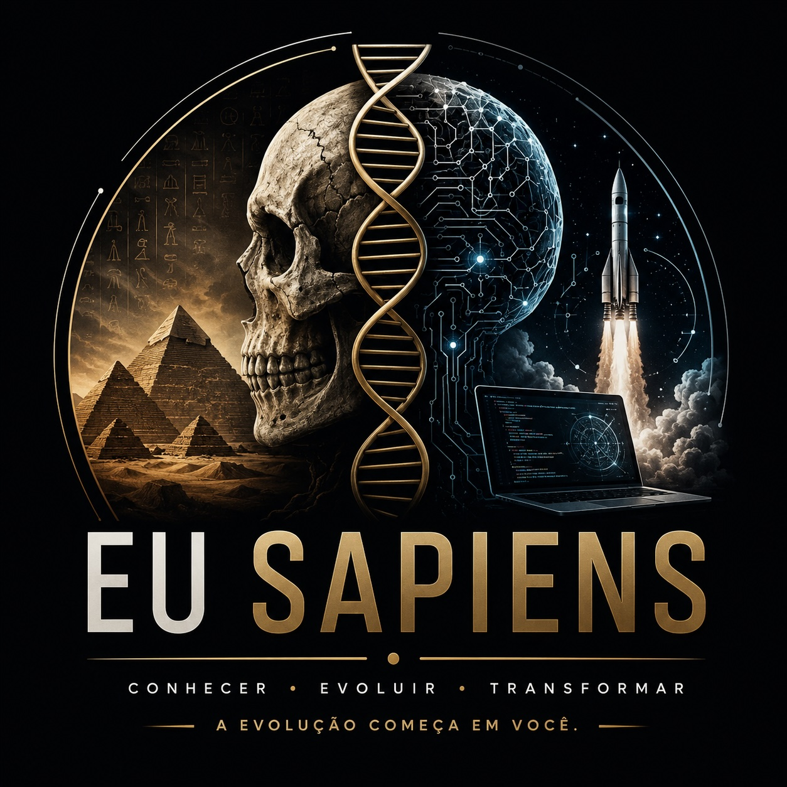

Justkaws
Canal sobre mim, cultura pop e tecnologia.
disponível para novos projetos
_
Mais de 20 anos transformando ideias em produtos e serviços de tecnologia — e traduzindo tudo isso em conteúdo, do código à cultura pop.

· Sobre mim
Especialista em Jogos Eletrônicos pela UEA e Cientista da Computação pela FUCAPI. Possui mais de 20 anos de experiência na criação de produtos e serviços informacionais, sempre no cruzamento entre tecnologia, negócio e pessoas.
Certificado por instituições como Harvard Business School, Microsoft, Scrum Alliance, LeanKanban e Adobe — trazendo essa bagagem para projetos, mentorias e para os canais que mantém no ar.
Certificações
· Informações
· Canais
Do humor sobre cultura pop e tecnologia à política sem enrolação, passando por desenvolvimento pessoal — cada canal com sua própria frequência.
Canal sobre mim, cultura pop e tecnologia.
Canal para falar sobre política, com linguagem simples e direta.

Canal focado em desenvolvimento pessoal.
· Contato
Projetos, parcerias ou só bater um papo sobre tecnologia — me manda um e-mail.
justkaws@gmail.com